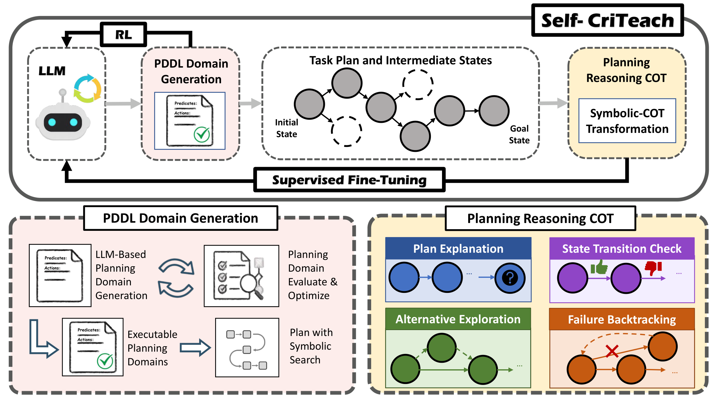
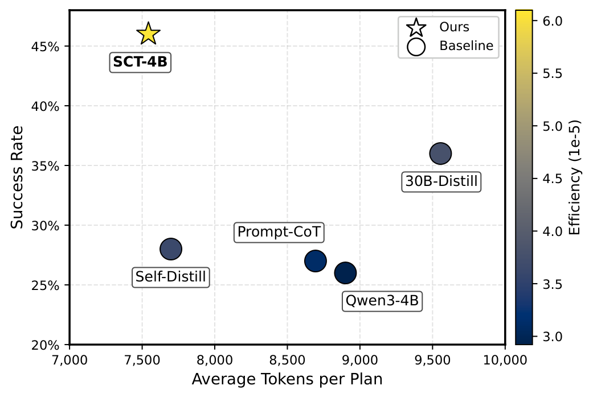

Large Language Models (LLMs) have recently shown strong promise for robotic task planning, particularly through automatic planning domain generation. However, prior approaches largely treat generated planning domains as planning utilities, which are brittle under imperfect logical states and perception noise, overlooking their potential as scalable sources of reasoning supervision and structured reward signals. At the same time, reasoning LLMs depend on chain-of-thought (CoT) supervision that is expensive to collect for robotic tasks, and reinforcement learning (RL) faces challenges on reward engineering.
We propose Self-CriTeach, an LLM self-teaching and self-critiquing framework in which an LLM autonomously generates symbolic planning domains that serve a dual role: (i) enabling large-scale generation of robotic planning problem–plan pairs, and (ii) providing structured reward functions. First, the self-written domains enable large-scale generation of symbolic task plans, which are automatically transformed into extended CoT trajectories for supervised fine-tuning. Second, the self-written domains are reused as structured reward functions, providing dense feedback for reinforcement learning without manual reward engineering. This unified training pipeline yields a planning-enhanced LLM with higher planning success rates, stronger cross-task generalization, reduced inference cost, and resistance to imperfect logical states.
A novel automated framework that treats LLM self-generated PDDL planning domains as reusable knowledge sources, whose compositional structure powers both scalable supervision for self-teaching and structured rewards for self-critiquing via RL.
The base LLM produces validated long-horizon planning datasets that extend beyond its intrinsic planning capacity, then uses this data for SFT — no human annotation required.
An automatic procedure that converts symbolic plans and intermediate states into chain-of-thought reasoning traces (plan explanation, state-transition checking, alternative exploration, and failure backtracking), shown to be highly effective for self-teaching.
The system reuses self-generated PDDL planning domains as structured reward functions, enabling post-training RL without any manual reward engineering.
Self-CriTeach yields a planning-enhanced LLM with robust planning performance, stronger cross-task generalization, reduced inference token cost, and resistance to imperfect logical state estimation.

We evaluate Self-CriTeach on the Blocksworld benchmark suite (seen: BW Classic, BW Hard, BW Align) and on three unseen task types (Prepare Experiment, Reorganize Room, Machine Parts Assembly), measuring planning success rate (fraction of tasks fully solved) and progress score (fraction of goal predicates satisfied).
Despite operating at a much smaller scale, SCT-4B consistently outperforms every same-tier open-source baseline. The advantage is most pronounced on long-horizon (BW Hard) and unseen task distributions.
| Model | Seen — Success Rate | Unseen — Success Rate | Overall | |||||
|---|---|---|---|---|---|---|---|---|
| BW Classic | BW Hard | BW Align | Prep. Exp. | Reorg. Room | Mach. Parts | Success | Progress | |
| SCT-4B (ours) | 0.60 | 0.45 | 0.75 | 0.45 | 0.18 | 0.50 | 0.46 | 0.76 |
| Qwen3-8B | 0.48 | 0.28 | 0.69 | 0.33 | 0.19 | 0.40 | 0.35 | 0.68 |
| Qwen3-4B | 0.41 | 0.24 | 0.42 | 0.24 | 0.12 | 0.34 | 0.26 | 0.59 |
| Mistral-24B | 0.21 | 0.11 | 0.71 | 0.18 | 0.10 | 0.12 | 0.21 | 0.49 |
| Ministral-8B | 0.03 | 0.02 | 0.05 | 0.01 | 0.02 | 0.02 | 0.02 | 0.14 |
| Gemma3-12B | 0.09 | 0.08 | 0.14 | 0.06 | 0.04 | 0.11 | 0.08 | 0.56 |
| Gemma3-4B | 0.01 | 0.01 | 0.01 | 0.01 | 0.01 | 0.01 | 0.01 | 0.44 |
| GPT-4o | 0.31 | 0.17 | 0.54 | 0.10 | 0.05 | 0.11 | 0.19 | 0.55 |
Takeaway: SCT-4B delivers a +20% absolute gain in overall success rate over its base model Qwen3-4B, including +21% on BW Hard — evidence that the gains come from internalized planning capability, not memorization.
Holding the backbone fixed at Qwen3-4B, we compare Self-CriTeach against distillation from a 30B reasoning model, majority voting, self-distillation, and prompt-engineered CoT.
| Method | Seen — Success Rate | Unseen — Success Rate | Overall | |||||
|---|---|---|---|---|---|---|---|---|
| BW Classic | BW Hard | BW Align | Prep. Exp. | Reorg. Room | Mach. Parts | Success | Progress | |
| SCT-4B (ours) | 0.60 | 0.45 | 0.75 | 0.45 | 0.18 | 0.50 | 0.46 | 0.76 |
| 30B-Distill | 0.50 | 0.31 | 0.74 | 0.23 | 0.16 | 0.49 | 0.36 | 0.54 |
| Majority Vote | 0.46 | 0.26 | 0.49 | 0.30 | 0.15 | 0.39 | 0.32 | 0.66 |
| Self-Distill | 0.45 | 0.23 | 0.44 | 0.25 | 0.13 | 0.35 | 0.28 | 0.62 |
| Prompt-CoT | 0.43 | 0.22 | 0.45 | 0.24 | 0.12 | 0.33 | 0.27 | 0.64 |
Takeaway: SCT-4B beats every alternative training/inference recipe — including distillation from a 30B model — suggesting symbolic-CoT supervision provides higher-quality signal than scaling up the teacher.

We isolate each Self-CriTeach component: SFT only (SCTSFT), the longer-horizon CCS objective (SCTLCCS), Constrained Policy Optimization (SCTCPO), DPO (SCTDPO), and training on raw symbolic plans without CoT transformation (SCTSymbol).
| Variant | Seen — Success Rate | Unseen — Success Rate | Overall | |||||
|---|---|---|---|---|---|---|---|---|
| BW Classic | BW Hard | BW Align | Prep. Exp. | Reorg. Room | Mach. Parts | Success | Progress | |
| SCT-4B (full) | 0.60 | 0.45 | 0.75 | 0.45 | 0.18 | 0.50 | 0.46 | 0.76 |
| SCTSFT-4B | 0.58 | 0.41 | 0.67 | 0.42 | 0.17 | 0.49 | 0.43 | 0.67 |
| SCTLCCS-4B | 0.49 | 0.36 | 0.51 | 0.25 | 0.17 | 0.30 | 0.31 | 0.71 |
| SCTCPO-4B | 0.52 | 0.33 | 0.52 | 0.29 | 0.17 | 0.35 | 0.31 | 0.69 |
| SCTDPO-4B | 0.47 | 0.27 | 0.49 | 0.27 | 0.16 | 0.36 | 0.29 | 0.67 |
| SCTSymbol-4B | 0.54 | 0.34 | 0.84 | 0.16 | 0.14 | 0.50 | 0.38 | 0.62 |
| Qwen3-4B (base) | 0.41 | 0.24 | 0.42 | 0.24 | 0.12 | 0.34 | 0.26 | 0.59 |
Takeaway: SFT alone already moves overall success from 0.26 → 0.43; adding RL with structured rewards pushes it to 0.46. CPO consistently outperforms DPO. Training on raw symbolic plans without the CoT transformation (SCTSymbol) helps seen tasks but generalizes poorly to unseen ones, confirming the value of symbolic-to-CoT supervision.
PDDL-based task planners are brittle under incomplete or noisy logical states from imperfect perception. We deploy SCT-4B on a real UR5e robot — using its control API as low-level skills — and compare against a classical PDDL solver on two tasks under two perception pipelines: a rule-based classifier (low noise) and a VLM (Qwen3-VL-4B, high noise) that predicts logical states directly from images. Ten trials per task.
Comparison between SCT-4B and a classical PDDL solver under two perception pipelines. SCT-4B is markedly more robust to noisy logical-state estimates.
| Logical-State Estimator | SCT-4B (ours) | PDDL Solver | ||
|---|---|---|---|---|
| Room | Lab | Room | Lab | |
| Qwen3-VL-4B (high noise) | 0.70 | 0.60 | 0.40 | 0.20 |
| Rule-based Classifier (low noise) | 0.80 | 0.90 | 0.70 | 0.70 |
Takeaway: Under the high-noise VLM pipeline, the PDDL solver collapses (0.40 / 0.20) while SCT-4B retains 0.70 / 0.60 — it reasons over partial symbolic observations rather than failing fast on missing or inconsistent predicates.
Complete implementation with training scripts, evaluation pipeline, and documentation.
View CodeSCT-Qwen3-4B + SCT-Llama-3.1-8B plus intermediate training-curve checkpoints, in one repo with backbone subfolders.
Get Models7,476 training samples and 2,800 evaluation samples — seen + unseen PDDL planning problems.
Get Dataset# Install
pip install -r requirements.txt
# Load dataset
from datasets import load_dataset
ds = load_dataset("Self-CriTeach/pddl-planning-data")
# Once models are published, load by backbone via subfolder:
from transformers import AutoModelForCausalLM, AutoTokenizer
model = AutoModelForCausalLM.from_pretrained("Self-CriTeach/SCT", subfolder="Qwen3-4B")
tokenizer = AutoTokenizer.from_pretrained("Self-CriTeach/SCT", subfolder="Qwen3-4B")
# Generate plan
problem = "Static predicates: [[box, 1], [box, 2], [table, 0], [robot, r]]..."
inputs = tokenizer(problem, return_tensors="pt")
outputs = model.generate(**inputs, max_new_tokens=2048)
plan = tokenizer.decode(outputs[0], skip_special_tokens=True)If you find this work useful, please cite:
@article{huang2025selfcriteach,
title = {Self-CriTeach: LLM Self-Teaching and Self-Critiquing for Improving Robotic Planning via Automated Domain Generation},
author = {Huang, Jinbang and Li, Zhiyuan and Hu, Yuanzhao and Zhang, Zhanguang and Coates, Mark and Quan, Xingyue and Zhang, Yingxue},
journal = {arXiv preprint arXiv:2509.21543},
year = {2025},
url = {https://arxiv.org/abs/2509.21543}
}Huawei Noah's Ark Lab
Huawei Noah's Ark Lab
University of Toronto
Huawei Noah's Ark Lab
University of British Columbia
Huawei Noah's Ark Lab
McGill University
Huawei Noah's Ark Lab
Huawei Noah's Ark Lab